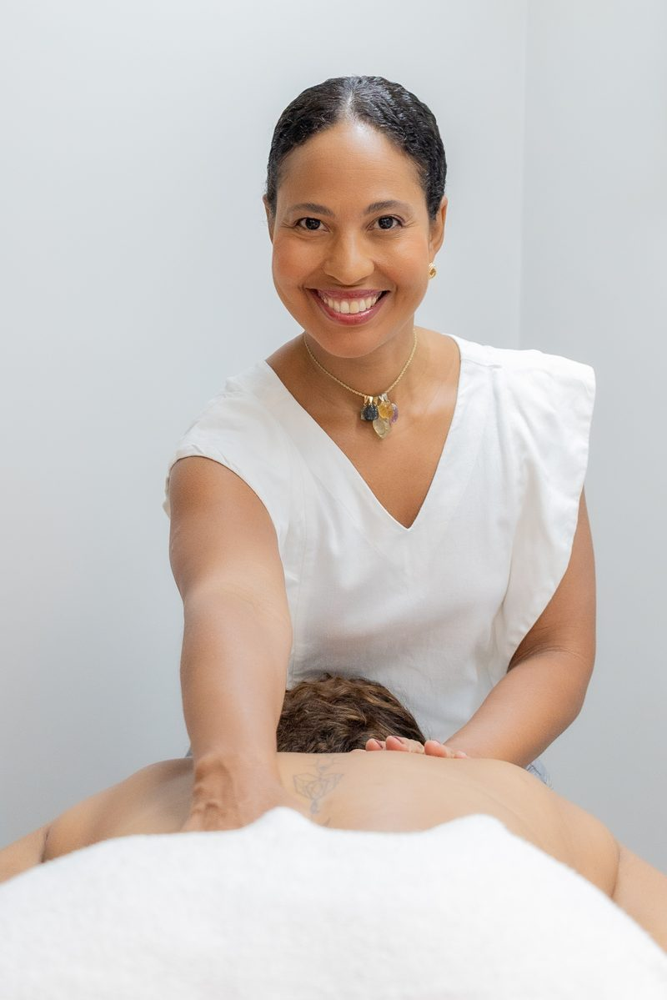
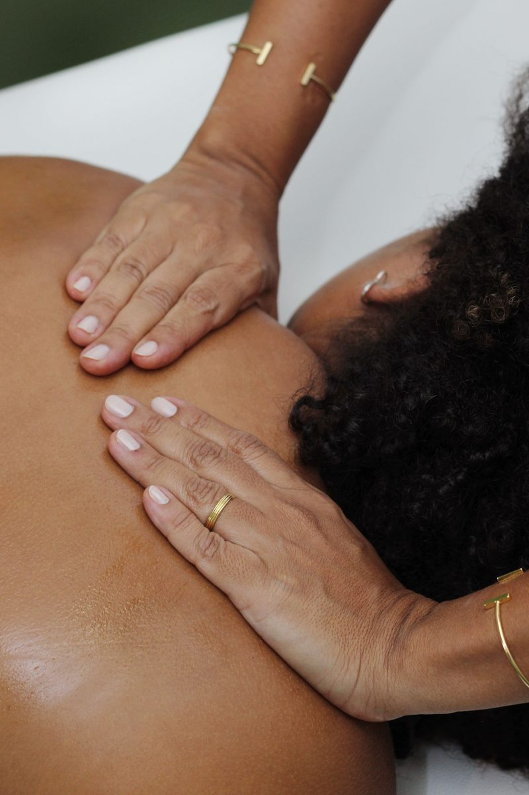
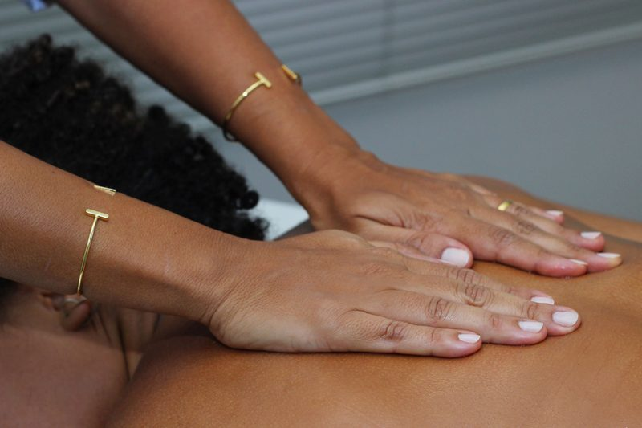
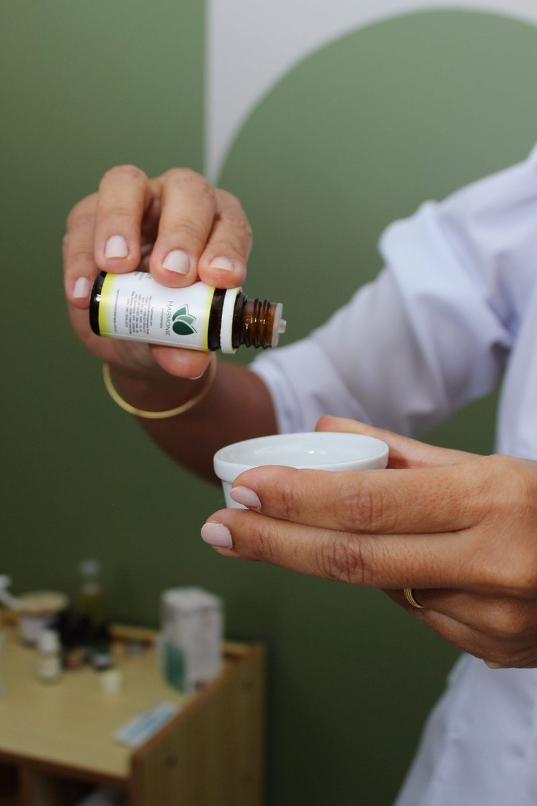
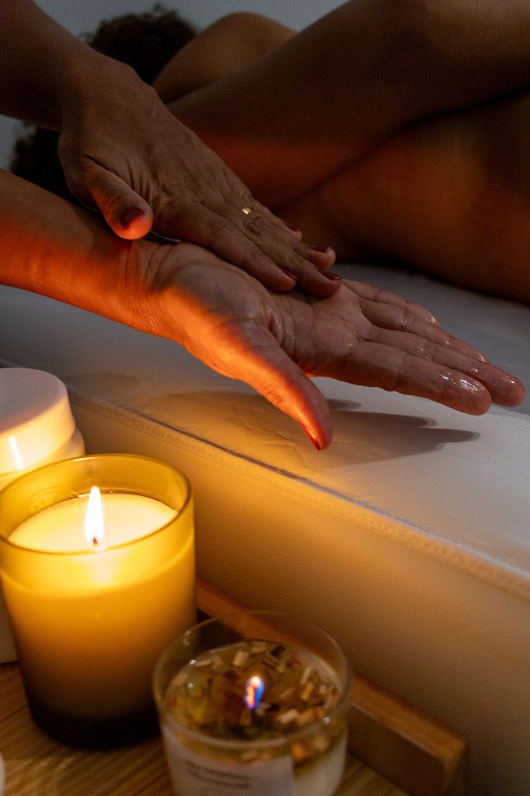
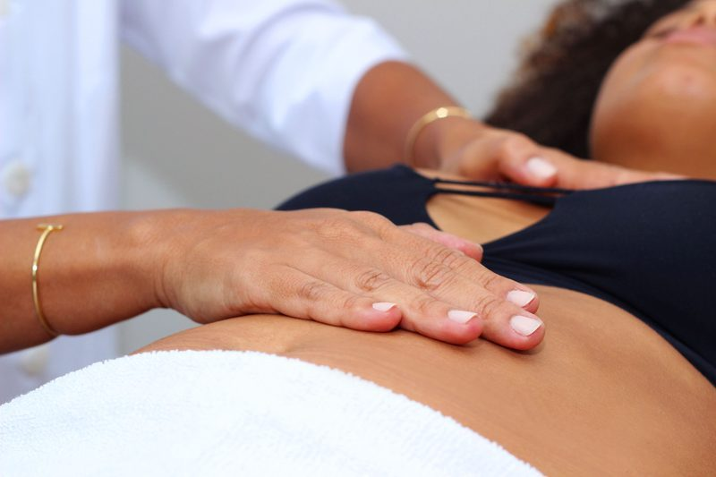

Drenagem Linfática · Itaigara, Salvador
Leveza, menos inchaço e um momento só seu. Fisioterapeuta há 23 anos, criadora de um método exclusivo que une toque suave, respiração e óleos essenciais personalizados.
Para quem é
A drenagem Toque de Ouro vai além da drenagem tradicional: cada sessão é pensada para o seu corpo e para o seu momento, com técnica francesa, pressão adequada a cada região e um ambiente feito para você desacelerar.

Como é a sessão
Uma abordagem desenvolvida ao longo de mais de 20 anos de prática clínica, observação e refinamento, hoje ensinada a fisioterapeutas em parceria com a Escola Bahiana de Medicina e Saúde Pública.
Antes de qualquer protocolo, conversamos sobre seu histórico, suas queixas e seus objetivos.
Movimentos exclusivos, ritmo calibrado e pressão adequada a cada região, sem desconforto.
O corpo relaxa e responde melhor quando a respiração e a posição acompanham o toque.
Um blend de óleos essenciais escolhido para você potencializa o trabalho manual.




Drenagem para gestantes
A drenagem gestacional usa técnica adaptada para trazer leveza e bem-estar durante a gravidez. É segura durante toda a gestação quando feita por profissional capacitada, e é exatamente isso que eu ensino a outras fisioterapeutas.
Acompanhamento individualizado após cirurgias, para uma recuperação mais confortável: redução de edema, auxílio na cicatrização e prevenção de fibrose.
Para desinchar o rosto e aliviar o edema, com toque delicado e relaxante. Também incluída ao final da limpeza de pele.
Investimento
Cada protocolo é indicado depois da avaliação, para que você invista no que o seu corpo realmente precisa.
Conversa sobre seu histórico, queixas e objetivos para definir o melhor protocolo. O valor da avaliação é descontado da sua primeira sessão.
Resultados duradouros pedem constância. Nos pacotes a partir de 8 sessões, o valor por sessão fica menor.
4 drenagens por mês, blend de óleos essenciais personalizado, prioridade na agenda e acompanhamento pelo WhatsApp entre as sessões.
Atendimento exclusivamente particular, sem convênios.
Agendamento com depósito para garantia de horário.
Depoimentos
Estar aos cuidados da Patrícia é como flutuar. Ela tem mãos e escuta acolhedoras que proporcionaram minha entrega total e me fez tão feliz por entender e relaxar num momento que era só meu.
Como cirurgiã plástica ocular, sempre encaminhei minhas pacientes para Patrícia. Mas nesse ano, me vi como paciente e não hesitei. Além de acelerar minha recuperação, tratou das minhas cicatrizes e melhorou até minha qualidade de sono!
Fiz drenagem facial para tratamento de edema pós-cirurgia nos olhos e a melhora foi perceptível desde a primeira sessão. Além de funcional, super relaxante. Recomendo de olhos fechados.
O Espaço Patrícia Caroline é acolhedor, um local onde podemos recarregar as energias e saímos renovadas. Pat tem um Toque de Ouro. A sala transmite aconchego e leveza. Recomendo de olhos fechados!
Dúvidas frequentes
Onde estou
O Espaço Patrícia Caroline fica no Itaigara, perto da Pituba e do Caminho das Árvores. O primeiro passo é uma avaliação para traçarmos juntas o melhor protocolo para você.
Valor da avaliação descontado da primeira sessão.
Agendar pelo WhatsApp